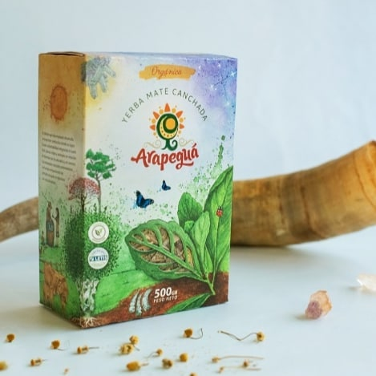
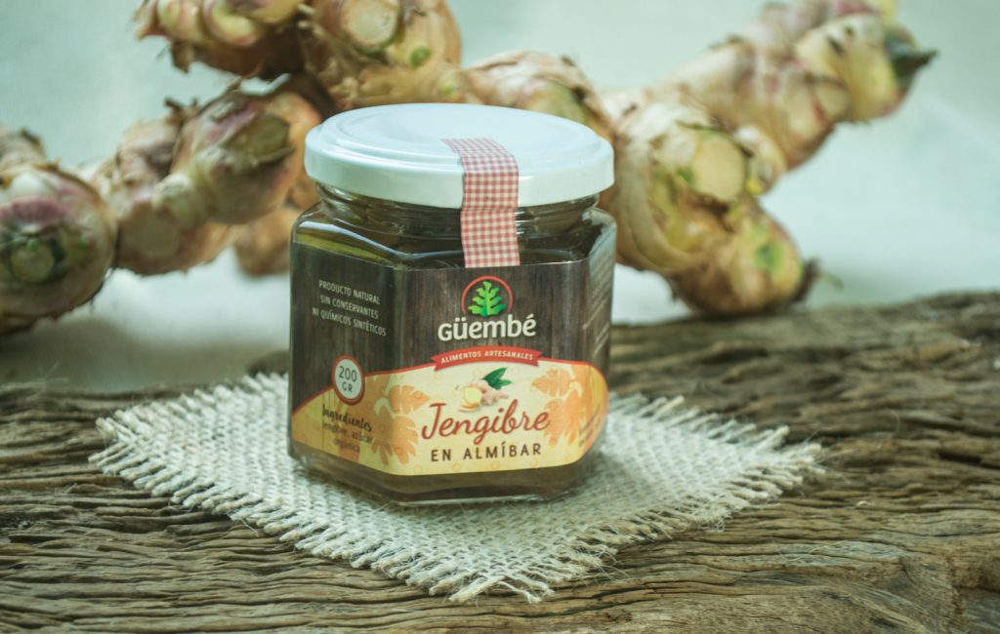
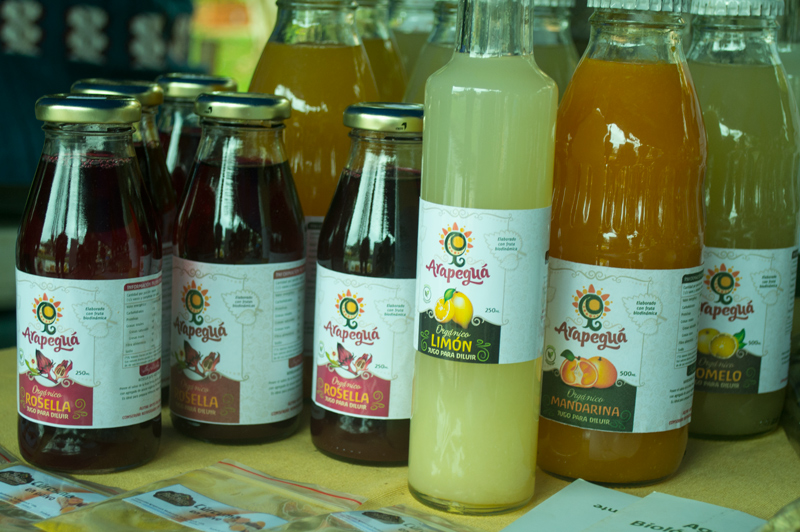
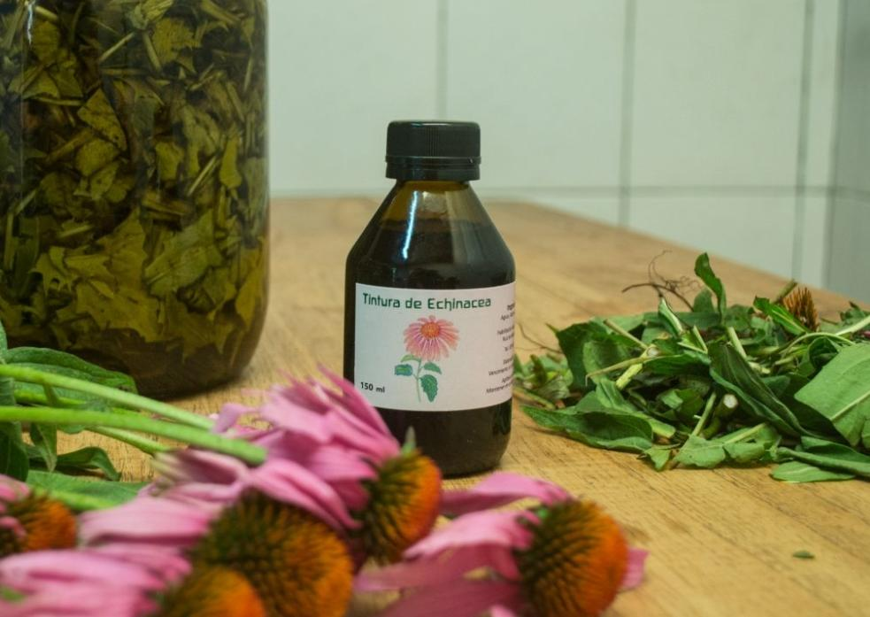
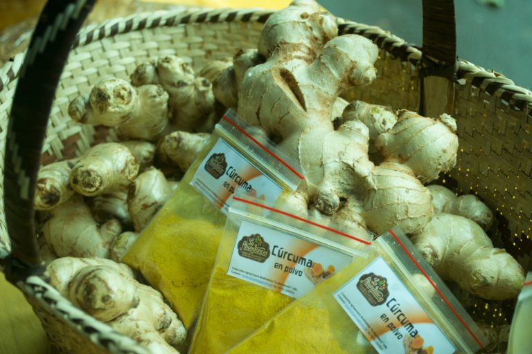

Yerba Mate Arapeguá
Tiene un estacionamiento de 24 meses, lo que hace que tenga un sabor suave y añejado...

Mermeladas y Conservas
Contamos con una amplia variedad de dulces, mermeladas y conservas de la marca Güembé...

Jugos Orgánicos
Jugos orgánicos bebibles y para diluir elaborados a base de fruta exprimida y azúcar orgánica...

Medicinas y cosméticos
Desde el año 2010 venimos desarrollando una línea de productos medicinales y cosméticos...

Jengibre y Cúrcuma
Estos cultivos se desarrollan muy bien en Misiones y con ello elaboramos jengibre en polvo...